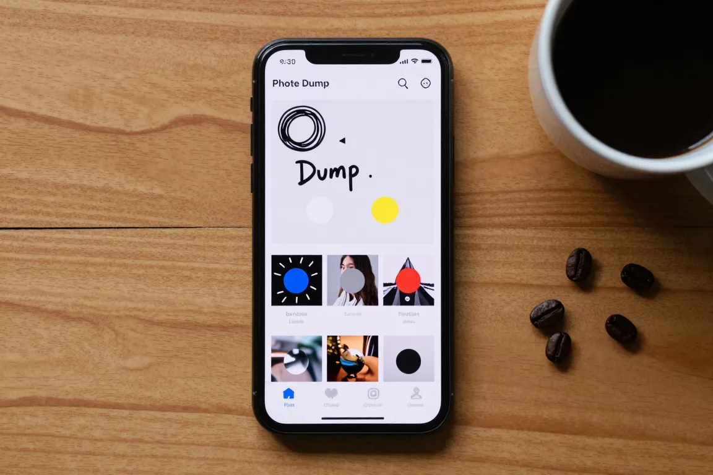

internet · 2020–now · also: Photo carousel dump, Casual carousel, Camera roll post
A carousel of 6 to 20 casual photos in one post: blurred, flash-lit, off-centre, with a screenshot, a meal and a mirror selfie in a row. It looks careless on purpose.

Core thesis
The opposite of the curated grid: show the camera roll as it is, so that the poster looks relaxed and real.
Design principles
Post 6 to 20 images in one carousel, up to 10 on the first apps and 20 on later ones.
Mix formats: a 4:5 portrait, a 1:1 square, a screenshot and a short clip, with no shared preset.
Allow blur, red-eye, hard flash and a tilt of 3° to 10° in at least 3 images.
Add a pale dotted pager of 6 dots under the post and a count badge such as 1/12 at the top right.
Open with the best photo and end with the funniest, such as a pet or a blurry mirror.
Set the caption in 1 line, lower case, with an emoji or a date such as 'feb dump'.
Overlay a sticker or a hand-written word in marker at 24px to 40px on 1 or 2 images.